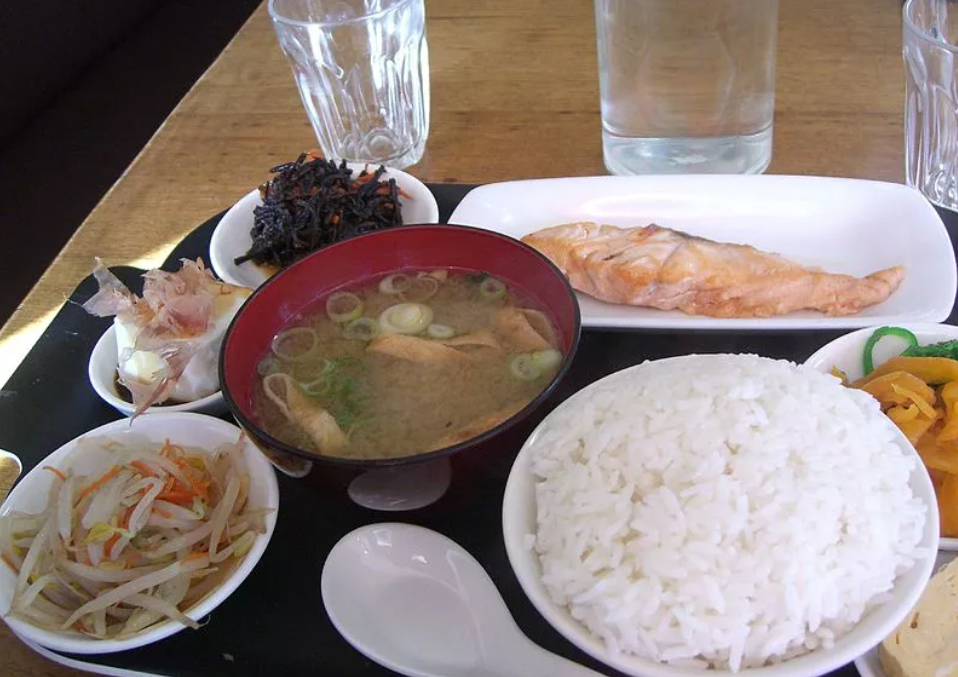
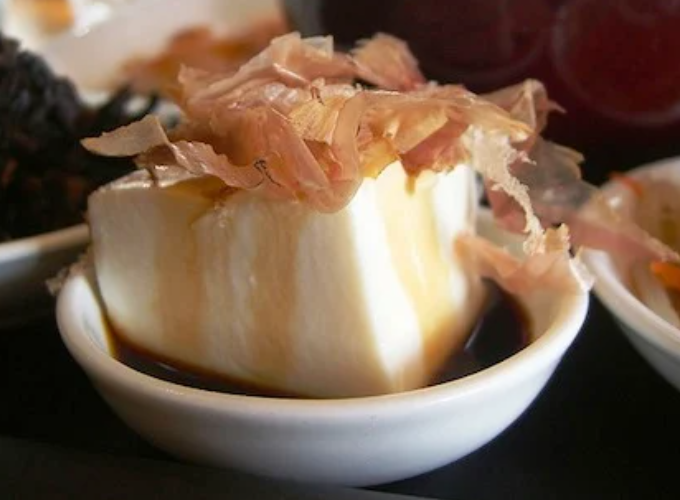
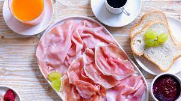
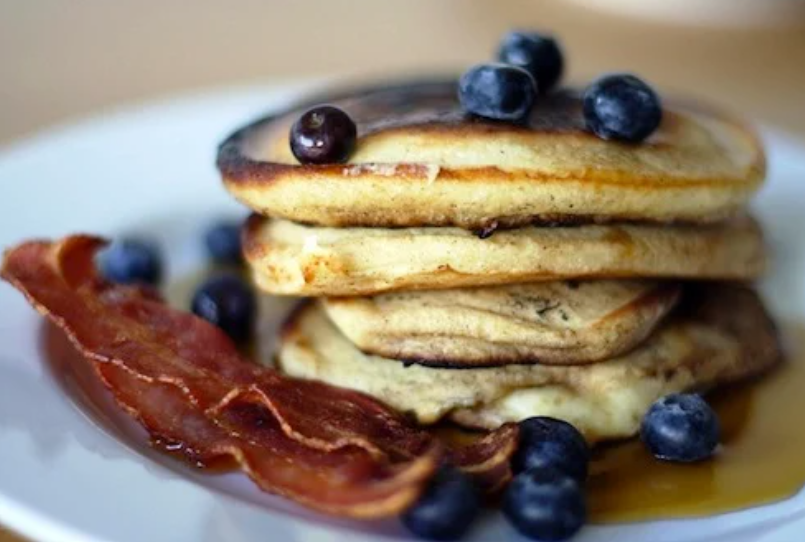

Colazioni nel mondo; cosa si mangia negli altri Paesi?
Giappone
Una scelta molto in voga per la colazione in Giappone è il tofu, magari accompagnato da riso e pesce. Come spesso accade, essi vengono intinti nella salsa di soia e, come il resto del regime alimentare dei giapponesi, anche questo pasto risulta molto salutare.
 Italia

La più classica delle colazioni consiste in una bevanda calda - caffè, tè, oppure cappuccino - accompagnata da una brioche oppure dei biscotti. Esistono in realtà molte varianti: c'è chi preferisce, soprattutto i più piccoli, una tazza di latte tiepido, dove magari tuffare dei cereali, oppure chi mangia un tramezzino al posto del cornetto.
Stati Uniti
Pancake fatto solitamente in casa, sciroppo, mirtilli. Ma la colazione non è davvero yankee senza un paio di fette dell’amato (e molto grasso) bacon. Benvenuti al club dei trigliceridi, da oggi siete soci onorari.
